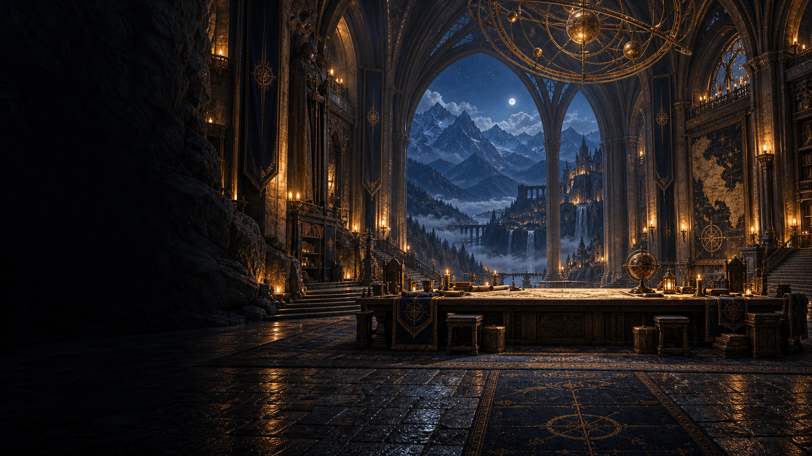

行銷遠征 / PREPARING THE ATLAS
準備第一道光
循著微光，探索下一個可能。
把想法帶進來。和一支懂得協作的隊伍，一起走向能交付的成果。
一個人，和一支 AI 團隊。沿著地圖，翻開四個地方的探險筆記。
走進本部，看一支 AI 團隊如何分工，將交辦接續成可以核對的成果。
在港口停靠，打開網站與創作成果，也看看每一次選擇背後的原因。
翻開 AI、內容與行銷的實作筆記，帶走一個能在自己工作裡試用的方法。
我是 Aster。這裡是我的探索、判斷，以及建立一人公司與 AI 團隊的起點。
AI 導入、內容製作或工作流程，先從你想完成的事談起。
